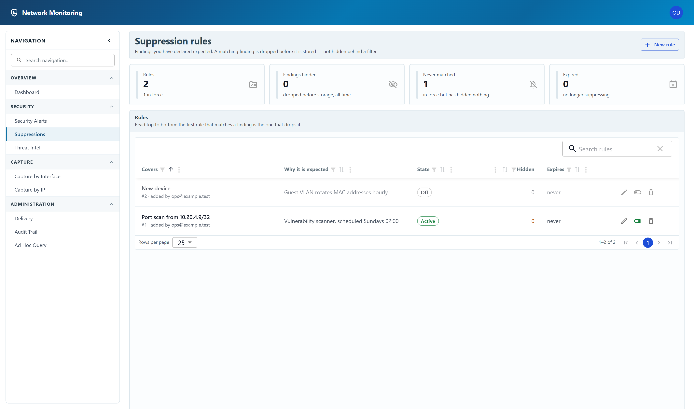

Suppression rules
Findings you have declared expected.
A vulnerability scanner that sweeps the network every Sunday will raise a port-scan finding every Sunday. It is not wrong — that is a port scan — but after the second week nobody reads the alerts page any more. A suppression rule is how you say so once.

What a rule does
A matching finding is dropped before it is stored, not hidden behind a filter. That is the important property and it cuts both ways: the alerts list stays readable, and a suppressed finding is genuinely gone — it is not sitting somewhere waiting to be un-hidden.
Rules are read from the top. The first one that matches a finding is the one that drops it, and the Hidden column counts how many findings each rule has actually dropped.
The four tiles above the table are the health check for this page:
- Rules — how many exist, and how many are in force.
- Findings hidden — how much they have dropped in total.
- Never matched — rules in force that have hidden nothing. Each is either harmless or a rule that does not do what its author thought.
- Expired — rules past their expiry date, no longer suppressing.
Adding a rule
- Click New rule.
- Narrow it with any combination of:
- Detector — the kind of finding to suppress.
- Source and Target — an address or a CIDR
range, such as
10.20.4.9/32for a single host. - Port.
- Type a reason. This is required, and it is the field that makes this page maintainable a year later: Vulnerability scanner, scheduled Sundays 02:00 can be judged by somebody else, where a rule with no reason can only be left alone or deleted.
- Optionally set an expiry, for something you know is temporary.
- Before saving, the form shows how many findings already in the system the rule would have matched. A draft that matches nothing is usually a mistake in the criteria rather than a quiet network.
Switching a rule off, and deleting it
Switching a rule off keeps it and its record — the reason, and what it hid — while it stops suppressing. Prefer that to deleting when you are only testing a theory.
Deleting a rule discards the record of what it hid along with it. Both actions are recorded in the audit trail.
Any signed-in account can see the rules and what they have hidden — which is the point, since a suppression rule explains an absence. Creating, editing, switching off and deleting a rule are restricted to administrators.